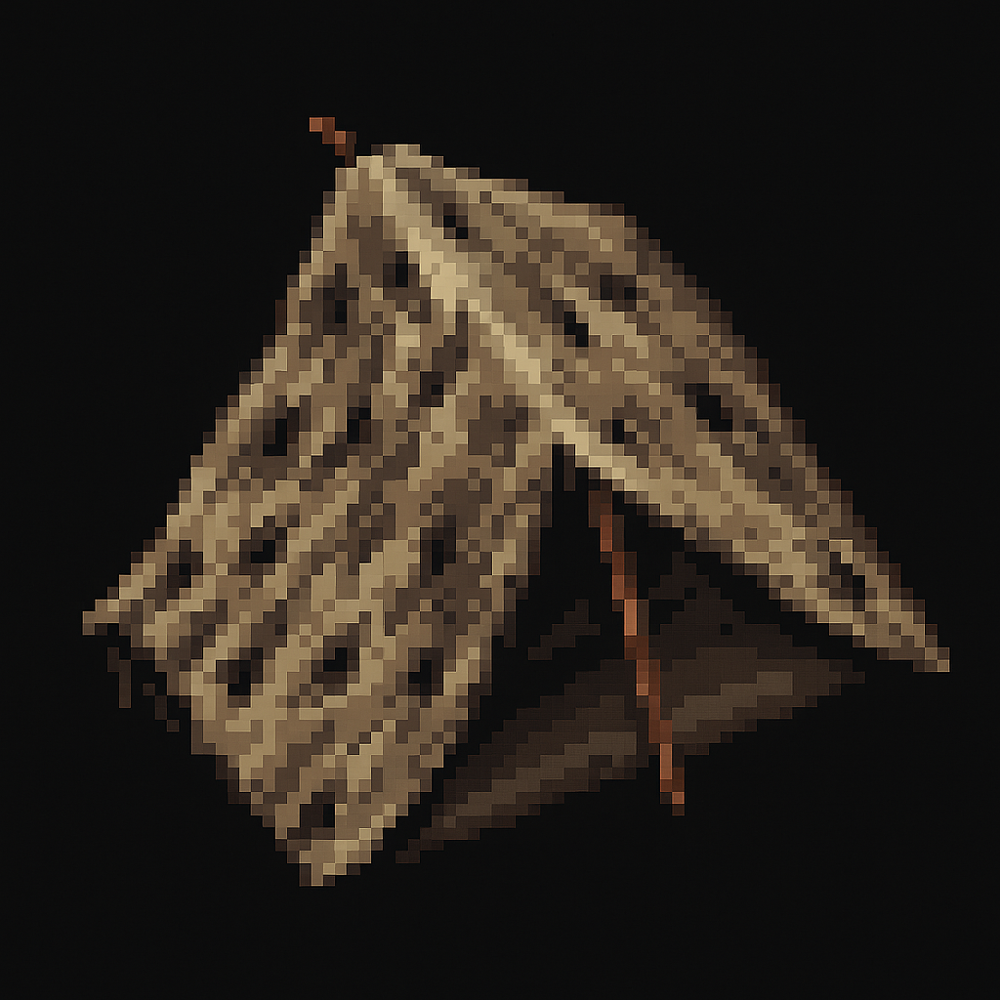

Iron Quest is a top down pixel art roguelike RPG made by Oliver and Robert Marsh. It features survival and crafting mechanics as well as raid boss mechanics and rare item drops to keep you coming back for more.
Iron Quest is full of handrawn and animated pixel art creatures that you can kill, skin and use to craft. Make sure you have your skinning knife ready, or in a pinch, a sharp rock - just don't expect that bear fur to come off clean enough for a perfect winter shawl.
Start off with a makeshift tent, made from animal fur and branches and work your way up from a log cabin to a fire proof stone cottage, then a castle or a stately home - its up to you! But just know Rome wasn't built in a day! And it will be a long process before you can build something worth calling home.
Fend off the cold by lighting a fire and finding a cave or expect to freeze by morning. Be sure to keep your appetite fed and sleep well or become hungry and slower to perform basic tasks. Even your hitpoint recovery will be slower.
If it ain't broke, don't fix it. Iron Quest's combat uses the tried and tested real time tick based combat system that you will find in games like Runescape and World of Warcraft. This system removes unnecessary player input while being open to a plethora of mechanics and avoids the tedious nature of turn based combat like you would find in the Interplay Fallout titles. Just like Runescape, Iron Quest has a number of attribute points that can drain including hitpoints that you will have to keep topped up by eating or casting powers. Run out of consumables? Run back to your camp!
Inspired by pixel art games like Owlboy and Stoneshard, Iron Quest has a distinct artstyle using traditional pixel art drawings.
Expect to be gathering food and resources just as much as you are exploring the wilderness and fighting monsters for their loot. In your down time work on your house, do some fishing and process your goods, whethers its smelting iron bars, smithing a new steel sword and armour or fletching arrows for your bow or brewing health potions. Everything you do at home will help you on your journey into the unknown.
Iron Quest wouldn't be a Quest without fantasy elements, and of course one of the beasts you can fight are Dragons. If you dare to delve into the domain, you can collect their scales to make a fire proof shield, and perhaps with the right equipment, you might earn yourself the title of Dragon Slayer!
As well as building your palace, you need things to decorate it with. But you also need the rare and impossibly hard to acquire items that only the creatures of the deepest darkest depths can offer you. Raid bosses will offer you the chance of rare item drops that you can wear and equip for a combat edge, that you can then use for further and more daring boss delves. Just as you can adorn your home with the skulls of Dragons, you might fight countless Dark Sorcerers in their Towers, Giants of Old, Sorcerecesses in their Spires, Vampire Counts in their Manors.
Then you have the really dangerous bosses - the Leviathans of the Condundrum, or the Sea Serpents of Alduria, the Hydras of Selsor, the Mountain Moles of Milzwar, the Anarchous Arachnids of the Elwen Forest, the Sire Wolves of Jeridzik, Thraxor the Elder Dragon of Valeria more!
Quest givers will ask you for errands like collecting mushrooms for a soup, or newts for a witches brew, where you will find long lost treasures or persons, and kill monsters that are terrozing local villages, all the way to month long quests where you will follow clues and hints that will take you all across the map. Uber quests and Terror trails will take months to complete and reward you with the most valuable items - but beware they will be a challenge to remember.
Whether you want to play hard core or casual there is a game mode for both types of players. When you die in casual you will simply need to corpse run to your body before timer runs out - so don't stray too far from your home. In hardcore your character will be remembered for their deeds.